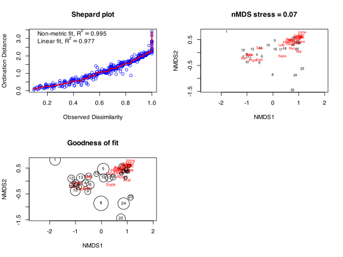
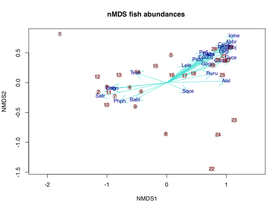
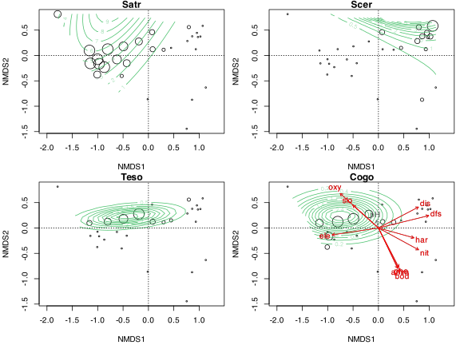

11a. non-Metric Multidimensional Scaling (nMDS)
![]()
| Type | Name | Link |
|---|---|---|
| Slides | nMDS lecture slides | 💾 BCB743_11_nMDS.pdf |
| Data | The Doubs River data | 💾 Doubs.RData |
nMDS is a rank-based indirect gradient analysis (i.e. not an eigen-analysis) that uses a distance or dissimilarity matrix as input. Whereas the ordination methods discussed thus far try to maximise the variance or correspondence between sites, nMDS strives to represent pairwise dissimilarities between sites in ordination space. It does not use the distances or dissimilarities directly (hence indirect), but these are substituted with their ranks (e.g. dissimilarities between pairs of sites are ordered by rank) (and hence non-metric in the name). This results in a loss of insight into the magnitude of difference between site pairs, but we benefit from the technique being more robust and less influenced by deviations from idealised data distributions.
nMDS is the non-metric equivalent to PCoA, the latter sometimes being called metric multi-dimensional scaling.
1 Set-up the analysis environment
2 The Doubs River data
We continue to use the species data:
3 Do the nMDS
spe_nmds <- metaMDS(spe, distance = "bray")Run 0 stress 0.07477805
Run 1 stress 0.1204795
Run 2 stress 0.07478423
... Procrustes: rmse 0.003639428 max resid 0.01446818
Run 3 stress 0.07376236
... New best solution
... Procrustes: rmse 0.01938555 max resid 0.09467756
Run 4 stress 0.07376232
... New best solution
... Procrustes: rmse 1.394896e-05 max resid 3.143879e-05
... Similar to previous best
Run 5 stress 0.08841671
Run 6 stress 0.07506668
Run 7 stress 0.1162315
Run 8 stress 0.07376223
... New best solution
... Procrustes: rmse 5.896887e-05 max resid 0.0002830634
... Similar to previous best
Run 9 stress 0.1124389
Run 10 stress 0.111109
Run 11 stress 0.1163348
Run 12 stress 0.1226151
Run 13 stress 0.1116941
Run 14 stress 0.08901468
Run 15 stress 0.1209555
Run 16 stress 0.07506664
Run 17 stress 0.1111084
Run 18 stress 0.1104318
Run 19 stress 0.0747781
Run 20 stress 0.1144001
*** Best solution repeated 1 timesspe_nmds
Call:
metaMDS(comm = spe, distance = "bray")
global Multidimensional Scaling using monoMDS
Data: spe
Distance: bray
Dimensions: 2
Stress: 0.07376223
Stress type 1, weak ties
Best solution was repeated 1 time in 20 tries
The best solution was from try 8 (random start)
Scaling: centring, PC rotation, halfchange scaling
Species: expanded scores based on 'spe' As always, reading the help file for (accessible as ?metaMDS) is invaluable (as are the help files for all other ordination techniques).
There’s a summary method available, but it is not particularly useful and I don’t display the output here:
summary(spe_nmds)Although summary(spe_nmds) does not return anything interesting, the species and site scores are nevertheless available directly through the scores() command, and they can be plotted as layer in ggplot2 if need be:
scores(spe_nmds)$sites
NMDS1 NMDS2
1 -1.79130473 0.81289529
2 -1.14370416 -0.15597092
3 -1.00361962 -0.07415768
4 -0.62132454 -0.07806747
5 0.07211756 0.45951124
6 -0.42770397 -0.15257849
7 -0.87070124 -0.22982505
8 -0.01439733 -0.86240118
9 -0.52656058 -0.40357030
10 -1.00863390 -0.37644589
11 -0.97241043 -0.16316648
12 -1.16256928 0.09801236
13 -0.80286272 0.12462446
14 -0.49309687 0.18012956
15 -0.18893894 0.27632322
16 0.08279176 0.12275705
17 0.29913778 0.11278786
18 0.44607217 0.14931884
19 0.76753890 0.28442164
20 0.86264862 0.37742228
21 0.95560844 0.44471614
22 0.75343332 -1.44485243
23 1.12999104 -0.63151559
24 0.85945275 -0.87241465
25 0.93364338 0.12324167
26 0.97552165 0.36327506
27 1.02401043 0.37358248
28 0.79640076 0.55870228
29 1.06945973 0.58324470
$species
NMDS1 NMDS2
Cogo -0.9122315 -0.10370193
Satr -1.1126996 -0.22541379
Phph -0.7890955 -0.32061880
Babl -0.5341321 -0.28936040
Thth -0.9380601 -0.09627638
Teso -0.5248683 0.16474334
Chna 0.9018966 0.36602393
Pato 0.5173736 0.38535605
Lele 0.3303767 0.28583516
Sqce 0.3586765 -0.15465273
Baba 0.7040310 0.47500791
Albi 0.7283393 0.47031622
Gogo 0.6854325 0.30424748
Eslu 0.6097091 0.42164835
Pefl 0.6173880 0.50370451
Rham 0.9669222 0.58273640
Legi 0.9564385 0.50921311
Scer 0.9661145 0.55186501
Cyca 0.9588578 0.62824419
Titi 0.7243883 0.41798182
Abbr 1.0827526 0.67967891
Icme 1.1284158 0.78233013
Gyce 1.0745919 0.40719321
Ruru 0.7595425 0.15139225
Blbj 1.0953866 0.58031586
Alal 0.9937266 0.02722878
Anan 1.0093670 0.61218211See Numerical Ecology in R (pp. 145 to 149) for information about the interpretation of a nMDSand the ordination diagrams shown below.
4 Ordination diagrams
We create the ordination diagrammes as before, but new concepts introduced here are stress, Shepard plots, and goodness of fit. The stress indicates the scatter of observed dissimilarities against an expected monotone regression, while a Shepard diagram plots ordination distances against original dissimilarities, and adds a monotone or linear fit line to highlight this relationship. The stressplot() function also produces two fit statistics. The goodness-of-fit of the ordination is measured as the \(R^{2}\) of either a linear or a non-linear regression of the nMDS distances on the original ones.
par(mfrow = c(2, 2))
stressplot(spe_nmds, main = "Shepard plot")
ordiplot(spe_nmds, type = "t", cex = 0.6,
main = paste0("nMDS stress = ", round(spe_nmds$stress, 2)))
gof = goodness(spe_nmds)
plot(spe_nmds, type = "t", main = "Goodness of fit")
points(spe_nmds, display = "sites", cex = gof * 200)
# ...bigger bubbles indicate a worse fit
A good rule of thumb: stress <0.05 provides an excellent representation in reduced dimensions, <0.1 is great, <0.2 is so-so, and stress <0.3 provides a poor representation.
We can also build ordination plots from scratch to suit specific needs:
pl <- ordiplot(spe_nmds, type = "none", main = "nMDS fish abundances ")
points(pl, "sites", pch = 21, cex = 1.75, col = "grey80", bg = "grey80")
points(pl, "species", pch = 21, col = "turquoise", arrows = TRUE)
text(pl, "species", col = "blue4", cex = 0.9)
text(pl, "sites", col = "red4", cex = 0.9)
Or we can fit response surfaces using ordisurf() and project environmental drivers:
require('viridis')
palette(viridis(8))
par(mar = c(4, 4, 0.9, 0.5) + .1, mfrow = c(2, 2))
with(spe, tmp <- ordisurf(spe_nmds ~ Satr, bubble = 3,
family = quasipoisson, knots = 2, col = 6,
display = "sites", main = "Satr"))
abline(h = 0, v = 0, lty = 3)
with(spe, tmp <- ordisurf(spe_nmds ~ Scer, bubble = 3,
family = quasipoisson, knots = 2, col = 6,
display = "sites", main = "Scer"))
abline(h = 0, v = 0, lty = 3)
with(spe, tmp <- ordisurf(spe_nmds ~ Teso, bubble = 3,
family = quasipoisson, knots = 2, col = 6,
display = "sites", main = "Teso"))
abline(h = 0, v = 0, lty = 3)
with(spe, tmp <- ordisurf(spe_nmds ~ Cogo, bubble = 3,
family = quasipoisson, knots = 2, col = 6,
display = "sites", main = "Cogo"))
abline(h = 0, v = 0, lty = 3)
env <- dplyr::slice(env, -8)
(spe_nmds_env <- envfit(spe_nmds, env))
***VECTORS
NMDS1 NMDS2 r2 Pr(>r)
dfs 0.97102 0.23901 0.7488 0.001 ***
ele -0.98914 -0.14698 0.6115 0.001 ***
slo -0.74847 0.66316 0.3268 0.016 *
dis 0.88584 0.46400 0.5684 0.001 ***
pH -0.26305 0.96478 0.0179 0.799
har 0.96340 -0.26806 0.3773 0.004 **
pho 0.45955 -0.88815 0.5440 0.001 ***
nit 0.87798 -0.47871 0.5819 0.001 ***
amm 0.42955 -0.90304 0.5548 0.001 ***
oxy -0.74264 0.66969 0.7395 0.001 ***
bod 0.44219 -0.89692 0.6574 0.001 ***
---
Signif. codes: 0 '***' 0.001 '**' 0.01 '*' 0.05 '.' 0.1 ' ' 1
Permutation: free
Number of permutations: 999
Using two unconstrained ordination techniques of your choice, analyse the mite data in the vegan package. Provide a brief description and discussion of what you have found, and produce the R code.
Using two unconstrained ordination techniques of your choice (not already used in 1, above) analyse the dune data in the vegan package. Provide a brief description and discussion of what you have found, and produce the R code.
The deadline for this submission is Monday x August 2022.
Provide a neat and thoroughly annotated Rmarkdown file which outlines the graphs and all calculations and which displays the resultant distance matrix. Use separate tabs for the different questions.
Please label the Rmarkdown and resulting HTML files as follows:
BCB743_<first_name>_<last_name>_Lab_6.Rmd, andBCB743_<first_name>_<last_name>_Lab_6.html
(the < and > must be omitted as they are used in the example as field indicators only).
Failing to follow these instructions carefully, precisely, and thoroughly will cause you to lose marks, which could cause a significant drop in your score as formatting counts for 15% of the final mark (out of 100%).
Submit your Labs on iKamva when ready.
5 References
Reuse
Citation
@online{smit2021,
author = {Smit, AJ},
title = {11a. {non-Metric} {Multidimensional} {Scaling} {(nMDS)}},
date = {2021-01-01},
url = {https://tangledbank.netlify.app/BCB743/11-nMDS.html},
langid = {en}
}